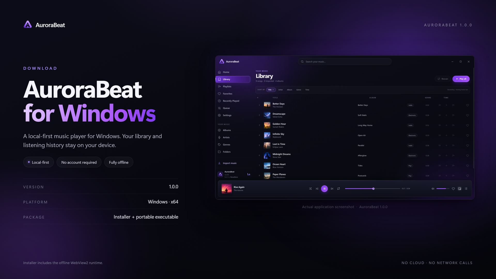

Product 01
AuroraBeat
Local-first music player for Windows x64

A quiet home for a local library.
AuroraBeat reads the music folders you choose, builds a local index from your tags and artwork, and gets out of the way. There is no account to create, no cloud library to sync, and no network traffic in the background.
- Local library indexing with tags, artwork, years, and durations
- Eight audio formats: MP3, WAV, FLAC, AAC, M4A, OGG, OPUS, WMA
- Seekable playback with shuffle, repeat, volume, and a persistent queue
- Playlists, favorites, search, sorting, rescanning, and metadata edits
- A 460 × 188 mini player with artwork, seek, transport, and window controls
- Dark, light, and system themes with six accent presets and two densities
- Tray controls and global media keys
Release details
- Version
- 1.0.0
- Platform
- Windows, 64-bit
- Packages
- Installer and portable executable
- Runtime
- Bundled offline WebView2
- Connectivity
- No accounts, no network calls
- File size
- 305,202,729 bytes (291 MiB)
- SHA-256
- Verify the download